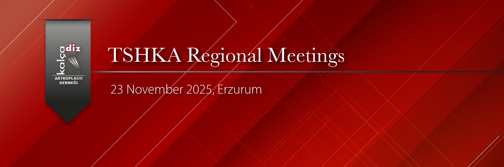

Dear Member,
We are pleased to invite you to the KADAD Erzurum Regional Meeting, featuring the scientific program titled “Hip Arthroplasty: From Primary to Revision.”
The meeting will be held on Sunday, November 23, 2025, at the Atatürk University Rectorate Blue Hall. Throughout the day, the program will cover a wide range of topics including primary hip arthroplasty, challenging cases, revision strategies, and periprosthetic joint infection management.
Participation is free of charge.
Registration Contact: Dr. Mehmet Cenk Turgut – +90 507 231 18 52
You may also access the full scientific program and details on our website:
www.artroplasti.org.tr
We would be delighted to have you join us at this meeting, where current concepts and clinical experiences in hip arthroplasty will be shared.
Kind regards,
KADAD Executive Board
